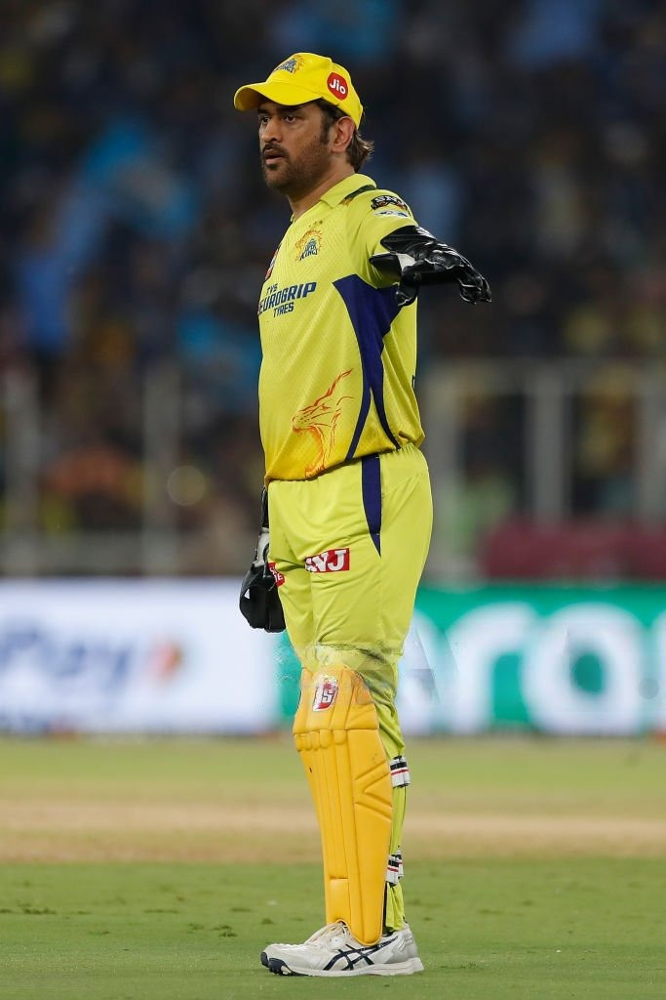
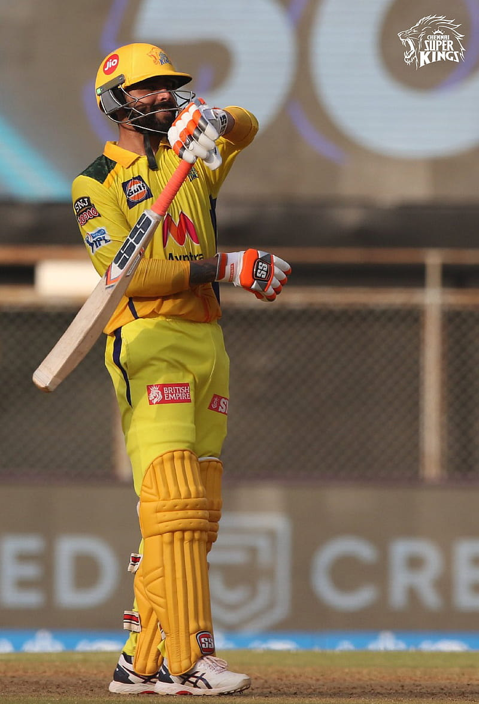
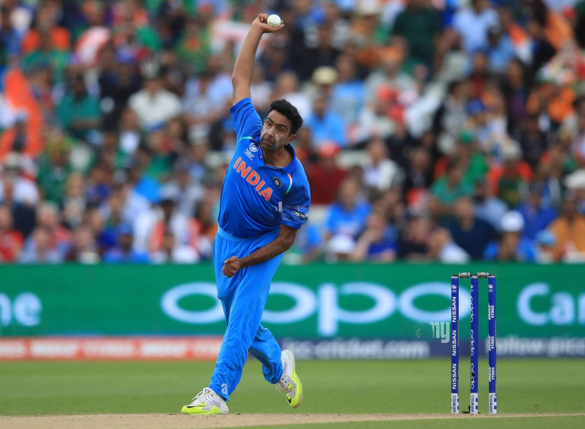

Mahendra Singh Dhoni aka "Mahi" was born on 7 July 1981 is a Indian cricketer who plays as a wicketkeeper batsman for Indian team and for CSK in IPL. He captained both in Indian team and in CSK team. He is regarded as the greatest of all time in Indian cricket. He has led India to victory in the 2007 ICC World Twenty20, the 2011 Cricket World Cup, and the 2013 ICC Champions Trophy, being the only captain to win three different limited overs ICC tournaments. He also led the teams that won the Asia Cup in 2010, 2016 and was a member of the title winning squad in 2018.
Details about Ravindra Jadeja as below.
Ravindra Jadeja (born 6 December 1988), also known as Rockstar Jaddu, is a Indian All-Rounder who bats left-handed and bowls left-arm orthodox spin. He plays for Indian team and for IPL team CSK. Jadeja was the leading wicket-taker in the 2013 ICC Champions Trophy and received the man of the match award as a member of the final-winning team. The awards received by Jadeja are: ICC ODI Team of the Year: 2013, 2016; Madhavrao Scindia Award for most wickets in Ranji Trophy: 2008 to 2009; Ranked 1st in ICC Top 10 Test all-rounders (2021); Arjuna Award: 2019.
Details about Ravichandran Ashwin:
Ravichandran Ashwin (born 17 September 1986) is a Indian cricketer He is a right-arm off spin bowler and a lower order batter. Widely regarded as one of the most prolific off spinners of all time, he represents the Indian cricket team and was part of the Indian team that won the 2011 Cricket World Cup and the 2013 Champions Trophy. He plays for Tamil Nadu and South Zone in domestic cricket and for Rajasthan Royals in the Indian Premier League (IPL).
